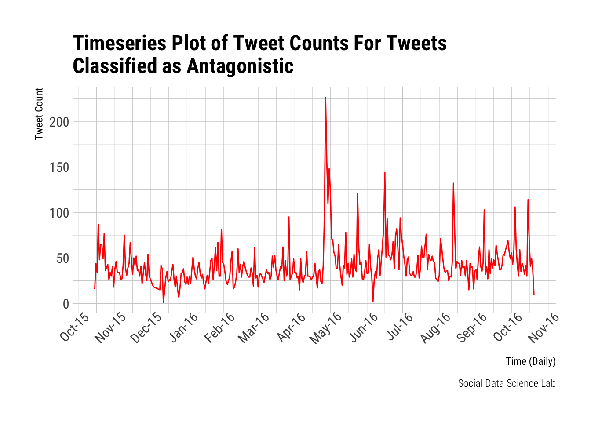

Last updated: 2017-11-10
Code version: bdfe5f2
This is a quick script to calculate mean monthly counts of antagonistic speech in the data set.
First data I/O and converting to time series.
options(digits=3)
library(data.table)
library(tidyverse)
extrafont::loadfonts()
library(xts)
library(hrbrthemes)
complete_dataset <- fread("~/Documents/Work/CST/event_data/big.dataset.complete.dataset.raw_GeoAgentsandHate.csv", stringsAsFactors = F)
complete_dataset$tweet.time.posix <- complete_dataset$tweet.time.posix %>% as.POSIXct()
antagonistic_subset <- complete_dataset %>%
select(classifier.hate.yes, tweet.time.posix) %>%
mutate(tweet.time.posix= as.Date(tweet.time.posix), classifier.hate.yes= as.numeric(classifier.hate.yes)) %>%
replace_na(., list(classifier.hate.yes=0))
ts_antagonistic<- xts(x = antagonistic_subset$classifier.hate.yes, order.by = antagonistic_subset$tweet.time.posix)
ts_sum_antagonistic <- apply.daily(ts_antagonistic,sum)
ts_sum_df_antagonistic <- data.frame(date=index(ts_sum_antagonistic), coredata(ts_sum_antagonistic))
colnames(ts_sum_df_antagonistic)=c('date','sum')Next, lets take a look at the antagonistic time series plot again.
b <- ggplot(ts_sum_df_antagonistic)+
geom_line(aes(x=date,y=sum), colour="red")+
labs( x= 'Time (Daily)', y= "Tweet Count",
title = "Timeseries Plot of Tweet Counts For Tweets \nClassified as Antagonistic ",
#subtitle = "Graph 2",
caption = "Social Data Science Lab") +
theme_ipsum_rc()+
scale_x_date(date_breaks = "1 month",date_labels = ("%b-%y"))+
theme(axis.text.x = element_text(angle = 45, hjust = 0.8))
b
Finally here is the information we have been looking for.
start(ts_antagonistic) # first day of the dataset[1] "2015-10-15"end(ts_antagonistic) # last day of the dataset[1] "2016-10-20"monthly <- apply.monthly(ts_antagonistic,sum)
monthly <- data.frame(date=index(monthly),coredata(monthly))
# monthly %>% glimpse()
summary_mean <- monthly %>%
mutate(pre_first_peak= ifelse(date<"2016-05-01", 1, 0)) %>% #selected first day of May as the peak ends then
group_by(pre_first_peak) %>%
summarise(., mean(coredata.monthly.)) %>%
select(pre_first_peak=pre_first_peak, mean_antag_count=`mean(coredata.monthly.)`)
summary_mean #pre/post peak-1 smmary mean antagonistic tweet count table# A tibble: 2 x 2
pre_first_peak mean_antag_count
<dbl> <dbl>
1 0 1380
2 1 1042pre_count <- round(summary_mean$mean_antag_count[2], 2)
post_count <- round(summary_mean$mean_antag_count[1], 2)As seen above, mean monthly antagonistic tweet count before the first peak is 1041.86; whereas mean monthly antagonistic tweet count is 1380.33.
sessionInfo()R version 3.4.2 (2017-09-28)
Platform: x86_64-apple-darwin15.6.0 (64-bit)
Running under: macOS Sierra 10.12.6
Matrix products: default
BLAS: /Library/Frameworks/R.framework/Versions/3.4/Resources/lib/libRblas.0.dylib
LAPACK: /Library/Frameworks/R.framework/Versions/3.4/Resources/lib/libRlapack.dylib
locale:
[1] en_GB.UTF-8/en_GB.UTF-8/en_GB.UTF-8/C/en_GB.UTF-8/en_GB.UTF-8
attached base packages:
[1] stats graphics grDevices utils datasets methods base
other attached packages:
[1] bindrcpp_0.2 hrbrthemes_0.3.3 xts_0.10-0
[4] zoo_1.8-0 dplyr_0.7.4 purrr_0.2.4
[7] readr_1.1.1 tidyr_0.7.2 tibble_1.3.4
[10] ggplot2_2.2.1 tidyverse_1.1.1 data.table_1.10.4-3
loaded via a namespace (and not attached):
[1] reshape2_1.4.2 haven_1.1.0 lattice_0.20-35 colorspace_1.3-2
[5] htmltools_0.3.6 yaml_2.1.14 rlang_0.1.2 foreign_0.8-69
[9] glue_1.1.1 bit64_0.9-7 modelr_0.1.1 readxl_1.0.0
[13] bindr_0.1 plyr_1.8.4 stringr_1.2.0 munsell_0.4.3
[17] gtable_0.2.0 cellranger_1.1.0 rvest_0.3.2 psych_1.7.8
[21] evaluate_0.10.1 labeling_0.3 knitr_1.17 forcats_0.2.0
[25] extrafont_0.17 parallel_3.4.2 Rttf2pt1_1.3.4 broom_0.4.2
[29] Rcpp_0.12.13 scales_0.5.0 backports_1.1.1 jsonlite_1.5
[33] bit_1.1-12 mnormt_1.5-5 hms_0.3 digest_0.6.12
[37] stringi_1.1.5 grid_3.4.2 rprojroot_1.2 tools_3.4.2
[41] magrittr_1.5 lazyeval_0.2.0 extrafontdb_1.0 pkgconfig_2.0.1
[45] xml2_1.1.1 lubridate_1.6.0 assertthat_0.2.0 rmarkdown_1.6
[49] httr_1.3.1 R6_2.2.2 nlme_3.1-131 git2r_0.19.0
[53] compiler_3.4.2 This R Markdown site was created with workflowr